Si descriva il concetto di file system, con particolare attenzione alla struttura ad albero tipica di UNIX. Come vengono gestiti i percorsi assoluti e relativi nel file system?
la risposta
Si inviti il candidato a spiegare la differenza tra memoria cache e memoria principale. Come il sistema operativo ottimizza l’uso della cache?
la risposta
Si inviti il candidato a descrivere i comandi fondamentali di gestione dei file in Linux, come cat, grep, sort, e uniq. Si fornisca un esempio d’uso combinato di questi comandi.
la risposta
Si definisca il concetto di processo orfano in un sistema operativo. Come il kernel gestisce i processi orfani e li assegna al processo init?
la risposta
(INTRODUZIONE A LINUX E BASH)
STORIA DI LINUX
Linux è una copia di UNIX, scritto da Linus Torvalds
il 64% dei server nel mondo sono con varianti di Unix o Linux
Unix ha una serie di programmi che funzionano da soli ma altri sono molto complessi e danno il meglio di se quando sono con altri programmi
Bash è il linguaggio di scrittura per la gestione dei sistemi operativi come Linux e Unix.
Oltre a essere un linguaggio di scripting è anche una Shell ovvero un software su riga di comando che esegue gli script
Carrellata di comandi
Man serve per mostrare il manuale di Linux di un determinato comando o tutto il manuale
Man comando
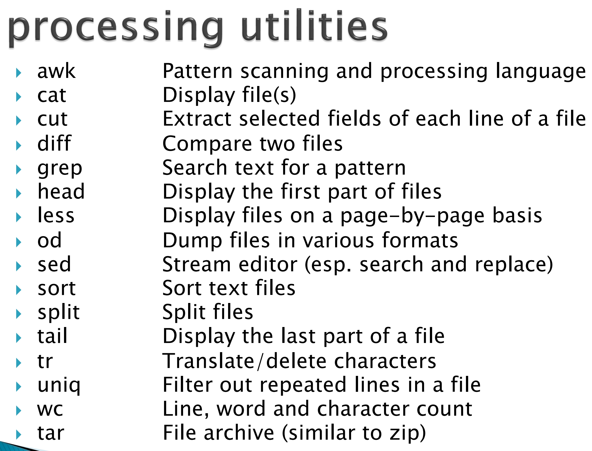
Cosa fanno tutti i comandi?
Questi comandi prendono n byte in input e mandano fuori n byte in stream di output:
standard output, un tipo di output usato per le normali operazioni
output con errori standard error, consente di inviare solo i messaggi preoccupanti che contengono errori problemi da risolvere ecc..
cosa sono gli stream?
sono dei flussi astratti al livello software gestiti dal sistema operativo e bisogna vederli come degli spazi in memoria su cui ci si scrivono sopra le informazioni da streammare
Carrellata di comandi
Questi comandi mettono a disposizione alcune chiamate di sistema che non si possono usare su software che devono fare trap cambi di contesto ecc
Quindi, abbiamo visto questi comandi.
AWK→ serve per l'elaborazione di file in particolare di testo, CSV e log usando piccoli script
in awk si può usare un carattere separatore con -F
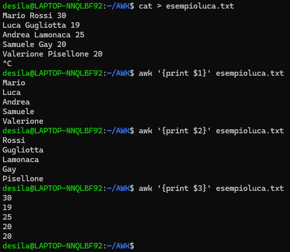
GREP→ cerca una stringa specifica all'interno di un testo.
la stringa si dice pattern e avremo la possibilità di modificare ciò che fa GREP usando dei comandi predefiniti
-i stampa senza fare distinzioni tra maiusc e minusc
-v stampa tutto tranne quella riga di quella parola
-n indica il numero della riga
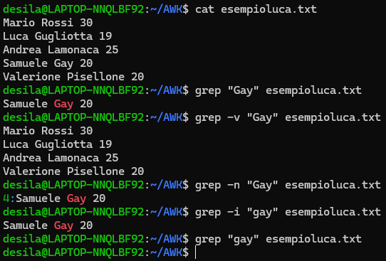
CAT→ il comando che accede ad un file per esempio, e lo invia allo standard output.
il comando CAT viene spesso usato con simboli di redirect come > e >>
”>” indirizza una cosa da una parte all’altra in questo caso potrebbe sovrascrivere da un file a un altro
”>>“è essenzialmente un append quindi aggiunge alla fine del file senza sovrascrivere
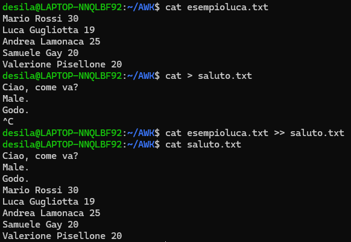
CUT→ ti permette di selezionare alcuni campi, colonne all'interno di un file usando delle opzioni di comando.
f1 consente di specificare la colonna in cui siamo creata da eventuali delimitatori o specificatori
d è un delimitatore che divide le righe in colonne basandosi su un carattere
c specifica i caratteri da estrarre tipo -c 1-4 per i primi 4 caratteri
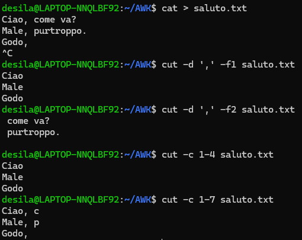
DIFF→ è la fantastica applicazione che permette di confrontare due file. Con DIFF puoi evidenziare tutte le modifiche che sono state fatte al file
w ignora gli spazi bianchi come caratteri di differenza
i ignora maiusc e minusc
q ti dice solo se i file sono diversi
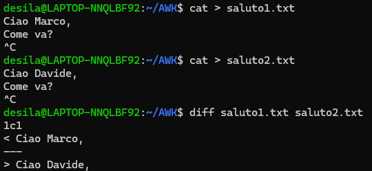
HEAD→ ti permette di vedere le prime righe di un file
default 10 righe
-n 5 si usa per indicare ad esempio le prime 5 righe
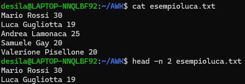
TAIL→ ti permette di vedere le ultime righe di un file
-n indica il numero delle righe
-f refresha le ultime righe in real-time utile per analizzare eventuali log
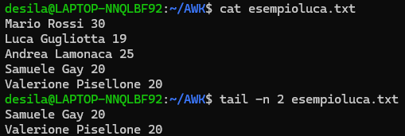
LESS→ è un visualizzatore di file che visualizza i file in base ai limiti del nostro display,
quindi non carica tutto in memoria(in questo caso di tipo ram) a differenza di cat e altri comandi.
quindi se ad esempio il nostro schermo visualizza 5 righe lui dinamicamente caricherà in
memoria il punto dove siamo e toglierà dalla memoria alcune cose che non vediamo
-N indica il numero di righe
OD→ visualizza i file in diversi formati
-x converte in esadecimale
-c converte in ASCII
-n specifica il numero di righe da visualizzare
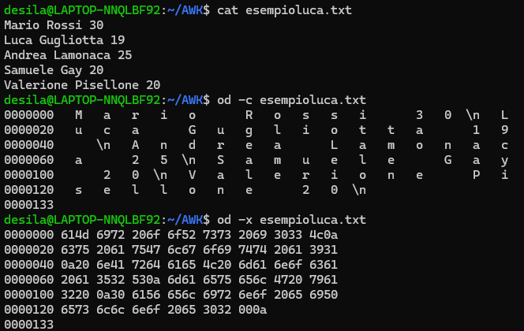
SED→ è un file editor che manipola i file
sostituendo determinate porzioni di testo
eliminando righe o parti di testo specifiche
inserendo testo in porzioni specifiche
trasformando il testo mettendo maiuscole o minuscole
filtrare righe in base a dei criteri
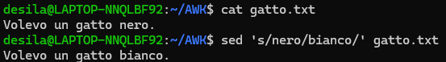
SORT dovrebbe prendere l'intero oggetto in memoria e ordinarlo.
le opzioni per ordinarlo di default in ordine alfabetico
-n in ordine numerico
-r in ordine decrescente
-k indica la colonna
-u rimuove duplicati
-o manda in output in un file specifico
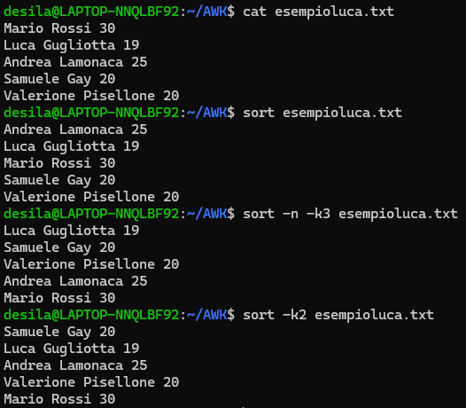
SPLIT→ lo uso se ho un file di grandi dimensioni e voglio dividerlo in file più piccoli
-l indica il numero di n righe ciascuno
-b indica il peso in kilobyte (K), megabyte (M) o gigabyte (G).
-a poi un numero che indica il numero del suffisso di ogni file, creerà ad esempio con
-a 3 farà tutti piccoli file come “output_aaa, output_aab, ecc.
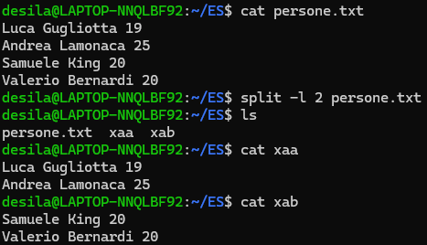
TR→ ci permette di sostituire un singolo carattere ovunque vogliamo.
-d per eliminare i file sostituiti
uso dei redirect per salvare e mandare al comando tr il file da modificare
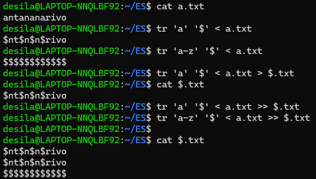
UNIQ→ toglie le ripetizioni da un file e fa tante altre cose
Funziona generalmente insieme al comando sort, poiché uniq elimina solo le righe duplicate adiacenti. IL SORT NON MODIFICA IL FILE, quindi se voglio salvare le modifiche dovrò inserirle in un altro file e ogni volta devo aspettare che il sort finisca
-c conta il numero di elementi
-d mostra solo i duplicati
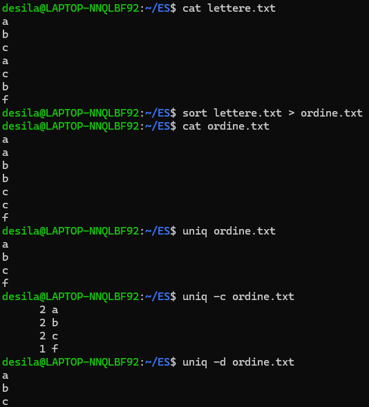
WC→ utilizzato per contare righe, parole e byte (o caratteri) in file o input.
-l conta solo il numero di righe
-w conta solo il numero di parole
-c conta il numero di byte
-m conta il numero di caratteri
-L mostra la lunghezza della riga più lunga.
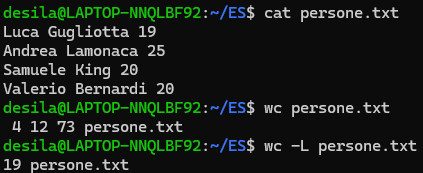
Precisazione sul significato di console
Console è un modo generico per definire tutti quei tipi di shell come bash sh zsh ecc... ovvero i vari software terminali
COMANDI FONDAMENTALI CHE SI USANO PER UN FILE
Conosciamo bene Open, Read e Write ma esiste anche il comando di seek
cosa fà il comando di seek?
il comando di seek è quel comando che ci consente di muoverci all’interno di un file.
questo serve perchè i file non vengono scritti in modo sequenziale e quindi abbiamo bisogno di spostarci
Spiegazione della pipe
significato di pipe a SISTEMI OPERATIVI LEZ.2
in termini di linguaggio bash le pipe si scrivono con | e sono utilizzate per collegare l’output di un comando all’input di un altro, permettendo la creazione di catene di comandi.
il comando esegue prima il comando a sinistra del |
Le funzioni sono ESTREMAMENTE ottimizzate
Ci sono alcune funzioni che sono un collo di bottiglia operazionale come il sort
La shell
La shell è un ambiente di scripting che ci consente di creare file con una serie di comandi da eseguire in modo sequenziale e nella Shell introducono degli elementi condizionali(if,for ecc…)
Visto che ho dei condizionali posso fare molte computazioni
Definizione di Script
Script sequenza di tutti i comandi necessari per eseguire quel compito
Script di tipo Bash
Il nostro script si chiamerà Bash→ “Bourne again-shell”
Variabili d’ambiente
Le variabili d’ambiente servono per memorizzare alcune informazioni utili che possono servire a processi o applicazioni.
Un esempio tra queste variabili d’ambiente è PATH, una stringa che contiene tutte le directory di tutti i comandi da eseguire
PATH al suo interno ha anche percorsi privilegiati con comandi eseguibili solo da super-user
Tip
Generalmente il sistema operativo PRIMA cerca il comando all’interno della cartella in cui ci troviamo e se lo trova lo esegue; se non lo trova va a cercare in questi percorsi privilegiati e se riesce a trovarlo lo esegue altrimenti restituisce comando non trovato.
come si stampa una variabile d'ambiente?
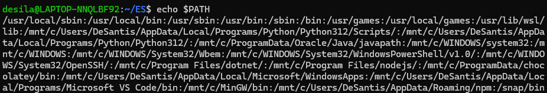
Printenv stamperà tutte le variabili del sistema
Possibilità di creare variabili personali oltre alle variabili di sistema
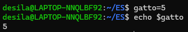
Queste variabili personali sono temporanee perché ogni volta che apro un terminale avvio un processo che si inizializza e poi esegue I comandi di base contenuti nel file bash.rc
Per creare una variabile per sempre bisogna scrivere in questo file .bashrc per farle leggere ogni volta che si avvia una shell
il file .bashrc si modifica ad esempio con vim
Bash esegue e interpreta comandi che gli diamo su riga
Comandi come whoami hostname ecc ti danno informazioni sul sistema
Esercizio per creare uno script che ti saluta con il tuo nome con vim
MIONOME=$(whoami)echo "CIAO" $MIONOME
per fare il return di uno standard output di un comando bisogna fare $(nome comando)
per eseguirla bisogna fare bash nomefile
Comandi per usare history e semplici editing per comandi
CTRL+R per fare una ricerca inversa con i suggerimenti di quello che abbiamo nella history con completamento
freccia su e freccia giù per muoverti nella history
se fai history ti stampa tutta la history
COMANDI DI AIUTO🛟
abbiamo due comandi
help, viene anche lui usato per aiuto su comandi ecc
man, accede al manuale e usa less in fase di display
Carrellata di informazioni sparse che non fanno male
INVENTORE DI HTML E WEB Tim Berners-Lee
Differenza tra Markdown e Markup
Un linguaggio di markup è un insieme di regole per annotare un documento in un modo che è leggibile sia per gli esseri umani che per le macchine.
Il markdown è un linguaggio di markup leggero creato per formattare testo in modo semplice e leggibile. È progettato per essere facilmente convertito in HTML e altre formattazioni.
Diff tra HTML e XML e JSON
html viene usato per strutturare pagine web visualizzabili
xml viene usato per strutturare e scrivere descrizioni su dati
json è più semplice ed utilizzato per app web client-server per rappresentare dati in modo chiaro
Poi esiste anche Yaml, un nuovo modo per scrivere in markup
HTML→XML→JSON→YAML
Precisazione su man
man è soltanto un programma che dato un comando va dentro la cartella con tutte le guide e usa il comando less per mostrare il contenuto
w è un comando ti dice chi è loggato
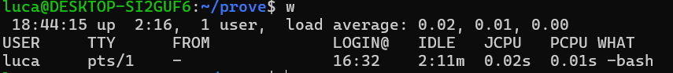
L’estensione di un file è una nostra cosa che aggiungiamo ma in realtà è una convenzione perché sarà sempre una stringa in Linux, quindi ci sarà un file che semplicemente ha una stringa come “pippo.txt” ma quel txt serve solo per noi utenti umani e non per il s.o. UNIX
Struttura del file system
La struttura di un file system è ad albero e serve a noi per organizzare al meglio le varie cartelle e file
ogni directory ha una directory genitore eccetto la root
Linux a differenza di Windows e altri ha solo un file system, infatti ogni disco in windows è una cosa a se
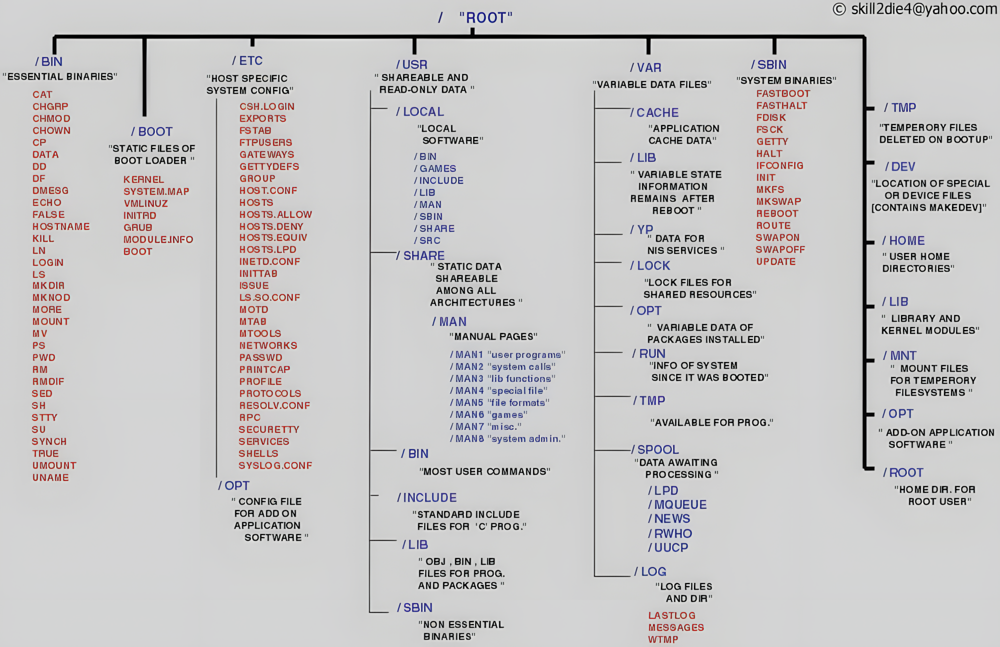
tutte le linee più scure indicano le directory di primo livello che sono accessibili solo dall’amministratore eccetto TMP che contiene tutti i file temporanei che al riavvio verranno eliminati
HOME: è una directory con tutte sotto-directory che corrispondono alle home dei vari utenti es: /home/Luca/home/paolo
DEV: riprendendo il concetto everything is a file qui avremo i file dei vari dispositivi ad es la stampante
LIB: contiene i file delle librerie essenziali che servono per eseguire i comandi di base, dentro ci sono anche le varie chiamate di sistema del kernel come read ecc…
MNT: Qua dentro avremo le cartelle dei dispositivi esterni di archiviazione come cd,usb,hdd ecc…
ROOT cartella Home ma per il root user sei proprio megalomane, il prof suggerisce di lavorare raramente su queste cartelle poiché si rischia grosso
OPT i software che non installi nella tua home li metti qui “accessibili a tutti” con ogni programma che ha una sua cartella
BOOT: Contiene tutti i file di cui ha bisogno il sistema in fase di accensione(boot) come il kernel
USR: contiene tutti i file che possono usare tutti gli utenti del sistema ma non modificare
SHARE:Contiene ad esempio MAN
INCLUDE:Ha le librerie usate dai compilatori tipo gcc
BIN: contiene la maggior parte dei comandi usati dagli utenti
SBIN: contiene i comandi di amministrazione di sistema infatti S sta per Superuser
BIN E SBIN: contengono comandi utili
VAR: Ho file che cambiano nel tempo come cache log ecc…
ETC: Contiene i file di configurazione e controllo del sistema
MEDIA: Tutti i file per gestire i dispositivi del MNT
cosa sono i file di log
file che si generano indicano il comportamento di un software, un sistema o un processo rimandando errori ecc
Comandi per navigare nel file system
pwd stampa la working directory
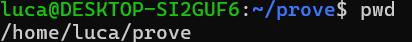
cd cambia la directory su cui lavorare
ls: si usa per mostrare la lista dei file
ha dei sotto comandi che si possono concatenare tipo ls -la:
-a mostra i file nascosti che di solito sono indicati con . all’inizio
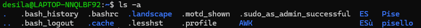
-ld mostra i dettagli dei file come i ruoli ecc senza mostrare i nomi
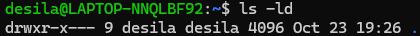
-F aggiunge alla fine di ogni directory / questo carattere
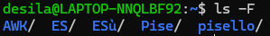
-lR mostra i file e i loro dettagli in modo ricorsivo quindi andando a fondo
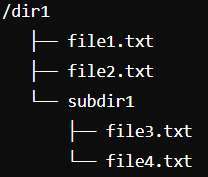
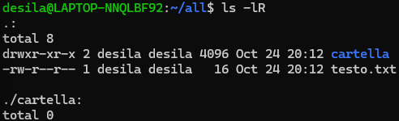
-lh mette le dimensioni dei file in modo che possa leggerli anche un umano con conversioni utili
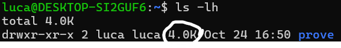
-lS sorting in base alla dimensione di un file
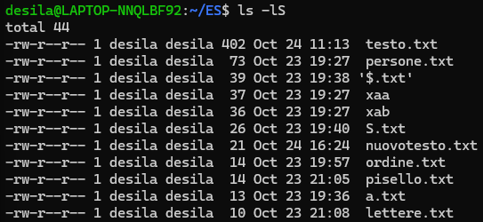
-lt sorta in base al tempo di modifica
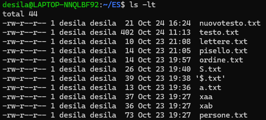
-lrth fa una lista dettagliata→ ordina al contrario(z-a) → sorta in base al tempo di modifica → mostra cambiando i dati in modo umano
Tool da usare per definire delle cartelle e file
i pathname si dividono in due tipi:
assoluti quando esprimi un indirizzo partendo dalla root /
relativi quando non lo fai
~ indica la tua home directory
. current directory
.. indica la directory genitore
* autocompletamento di un nome di un file *.txt
? completa un carattere tipo file?.txt
TAB prova a completare un filename
Ennesima serie di comandi
cp serve per copiare
copia byte a byte
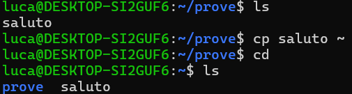
mv sposta un file in una destinazione
mv crea una copia nella destinazione che scegliamo e poi cancella il file nella destinazione originale
file identifica il tipo di file
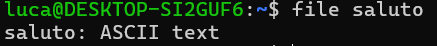
tac il contrario di cat quindi stampa al contrario
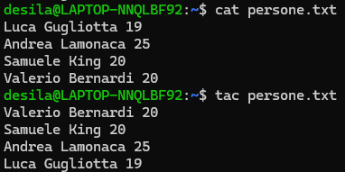
ln vedremo poi
touch cambia il tempo di modifica di un file
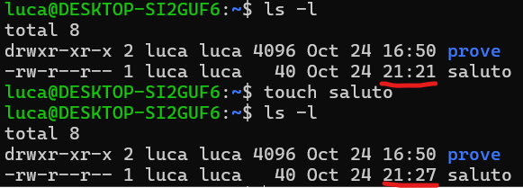
echo serve per stampare e un utilizzo è con il redirect
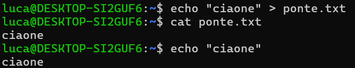
Permessi di accesso a un file
Come già detto in precedenza ogni file ha ruoli di lettura scrittura ed esecuzione
si possono modificare con
chmod facendo tipo chmod u+x nomefile
u=owner
g= group
o=other
a=all
DEFINIZIONI
r=read
w=write
x= execute
Chmod funziona anche con le seguenti mappature
read = 4
write = 2
execute = 1
Se voglio che un file possa essere letto e scritto da owner e group chmod 660 CARTELLA
TABELLA BASE
Gestione dei processi
interagendo con Linux creiamo una serie di istanze di programmi dette processi che hanno ognuno il loro PID
usiamo il comando ps per vedere le liste di processi in esecuzione
-ef in aggiunta a ps e mostra i processi non solo della tua sessione f mostra più dettagli ad albero
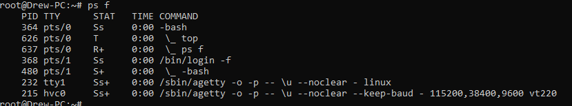
ps mostra solo i processi in esecuzione nel terminale corrente
f (forest): visualizza i processi in una struttura ad albero, utile per vedere le relazioni tra processi (genitore e figli).
u (user): mostra i processi associati all’utente corrente con un livello di dettaglio aggiuntivo, inclusi l’utente che ha avviato il processo e il tempo CPU utilizzato.
x (no controlling terminal): include anche i processi che non hanno un terminale di controllo associato (come i processi di sistema o demoni).
e (every): mostra tutti i processi del sistema, non solo quelli associati all’utente corrente.
ps -ef lo uso per vedere tutti i processi sul sistema
ps -ef | grep NOME serve per vedere tutti i processi posseduti da me e da altri membri del gruppo top per vedere chi consuma più CPU
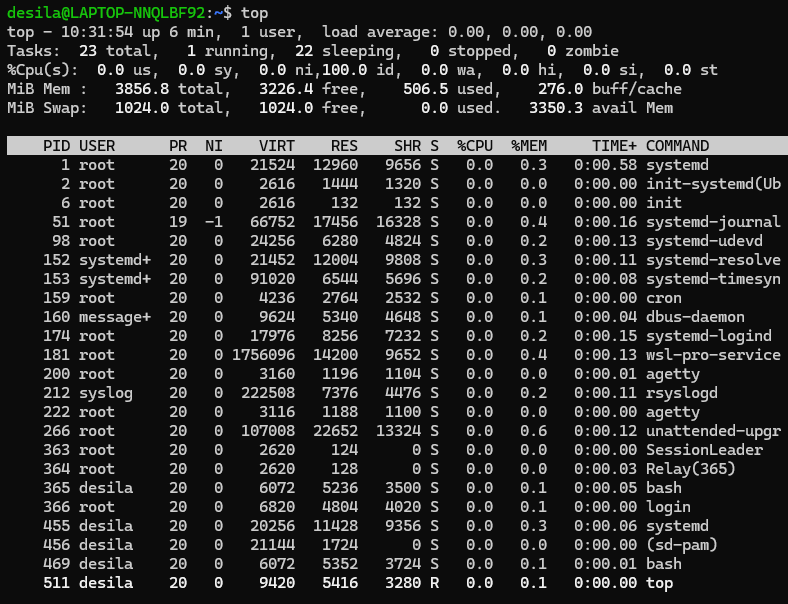
Interazione tra processi
in questa parte parleremo in modo approfondito dei processi e della loro gestione
come eseguire una applicazione?
per applicazioni si intendono ad esempio quei comandi messi a disposizione dal sistema operativo che sono nel path
un programma è una applicazione che viene eseguita
per eseguire uno script in bash fai
bash è anche un linguaggio di scripting che ci permette di formalizzare su più righe un codice fatto da comandi bash bash nomescript
oppure ./nomefile.sh
che succede se eseguo senza shebang?
non si sa il compilatore e quindi non funziona
usiamo shebang possiamo specificare all’inizio del file con quale interprete leggere lo script
per specificare un file bash userò #! /bin/bash
per python io scrivo #!/usr/bin/python3 dove specifico dove sia l’interprete
posso scrivere ./my_script.py così so che questo script verrà eseguito dall’interprete python.
Gestione dei permessi per eseguire uno script
per modificare i permessi si deve usare chmod come fatto in precedenza e bisogna mettere
se si vuole eseguire in file con ./ bisogna mettere x al file
se si vuole eseguire il file con un interprete quindi bash nomefile bisogna mettere la lettura al file e l’esecuzione al compilatore
Background vs Foreground
Foreground
quando eseguo un processo e lo lascio eseguire sul terminale(bash), lo faccio di default
non hai possibilità di mandare altri input alla shell finché non termina il processo che abbiamo eseguito in foreground(qualche piccola eccezione per comandi di interrupt particolari)
Background
lo mando in background con la &
./nomescript &
la fregatura
se io ho uno standard output nello script che stampa gli elementi a schermo viene comunque
stampata quella roba ma avrò la riga di comando libera per scrivere cose, per ovviare questo
problema devo mettere lo standard output da qualche parte ad esempio con un redirect su un txt
per stampare il codice bash
quando facciamo bash nome file >temp.txt passera gli output al txt e non sulla bash
tail -f per leggere l’output del file txt in real time
I job
Il job indica una unità di lavoro intesa come un processo
Ogni job ha un suo identificativo, per usarlo bisogna mettere il simbolo %
jobs tratta i processi come delle attività
posso attivare un job in background o in foreground
fg per foreground
bg per background
Se faccio il comando jobs mi stampa tutti i jobs e anche i vari processi perchè sotto potrebbero avere dei jobs
mi stampa ad ogni Job un identificativo che va da 1 a n con un + o -
il + indica che se faccio fg senza specificare nulla mi manderà il processo con il + in foreground, di solito lo hanno i processi che spesso richiedono input da tastiera
il - indica il processo che una volta concluso il + riceverà il + come suo successore
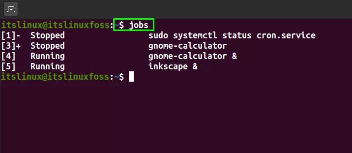
I segnali ai processi
per comunicare tra processi e ai processi abbiamo due cose
segnali inviati da un processo a un altro
interrupt causati da hardware
Ogni segnale ha un nome
Ctrl+c=segnale di interruzione
Ctrl+z=segnale del terminale di stop
Ogni processo ha un handler che gestisce il processo e lo termina
Nohup
Comando nohup sgancia il programma dal processo padre e lo mette alla root
anche i processi sono un file e quindi vengono messi alla root se si fa nohup
visto che stacchiamo il processo non sarà più dipendente dalla bash
nohup manda tutto lo stdoutput e error brutalmente su un file di output chiamato nohup.out, se non viene specificato diversamente
La bash se viene chiusa manda un segnale che chiude tutti i suoi processi figli
invece con i normali processi se hanno un padre e il padre viene ucciso vengono inizializzati e gestiti per fargli continuare l’esecuzione
SCREEN
e se devo interagire? che succede? il processo ora è staccato quindi è fuori
possiamo ricorrere all’operativo screen ci permette di simulare la bash
da bash ho aperto screen e screen ha aperto un processo bash
ctrl a d esco dalla bash vecchia e ritorno alla bash principale
e posso creare altre screen
sono finestre virtuali che simulano più bash
uccidere un processo padre non ammazza i figli
il processo figlio se viene ammazzato non ammazza il padre
suggerimento: uccidere prima i papà e poi i figli
screen se devo interagire
nohup se non devo interagire
57
usare sudo ma MAI usare l’utente root
creazione di un utente
useradd fa il minimo indispensabile manco crea la home
la riga di comando che gli si assegna di default è sh e fa cagare e dobbiamo dare il path della bash
-d dove deve essere la home -m per crearla
-G assegnare un gruppo tipo sudo ovvero della gente che puo fare il sudo
username ma senza password
settare la password sudo passwd username
dove vengono messe le password
le password sono cifrate
il metodo piu semplice e usare una funzione di ash che non la rende invertibile ma che possiamo conoscere con pass predefinite
quindi si legge il file cryptato ma si sanno i significati e si fa bruteforce
md5 1h 9?
cambiare i due hash ti permette di modificare la password
per grep esistono le regex tipo il cappelletto
sbin